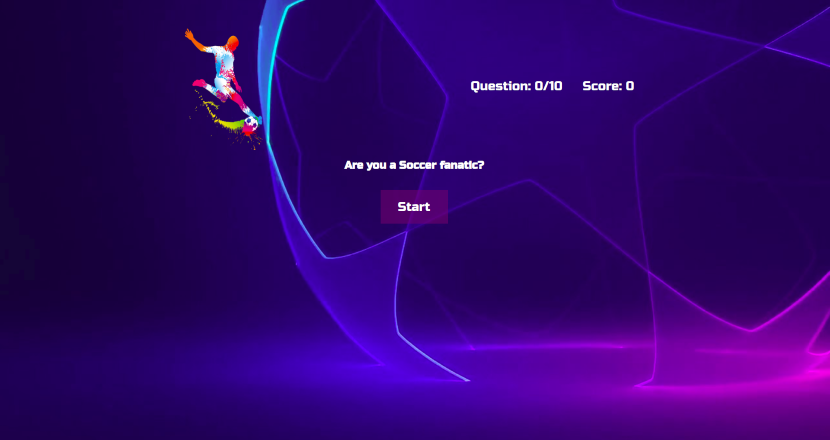

Welcome
Hey everyone, my name Duro Akintunde and welcome to the site.
About Me
Bio:
For as long as I can remember I’ve always thought outside of the box and had the ability to create. Being a fullstack developer helps me channel those skills. I love coding for the fact that I can always build, or implement an idea and bring it to life. I take great pleasure in acquiring new skills, JavaScript, and taking on challenges towards achieving my goals of wanted to be a pure creator.
Outside of wanted to be a fullstack developer, I am most known for being quite the soccer fanatic. Currently I enjoy learning how to cook new recipes and also making arts and crafts. From working out and being involved in sports, to being an avid gamer, to taking walks and finding a spot to meditate, I always try to be as diverse when it comes to my activities.
Projects
